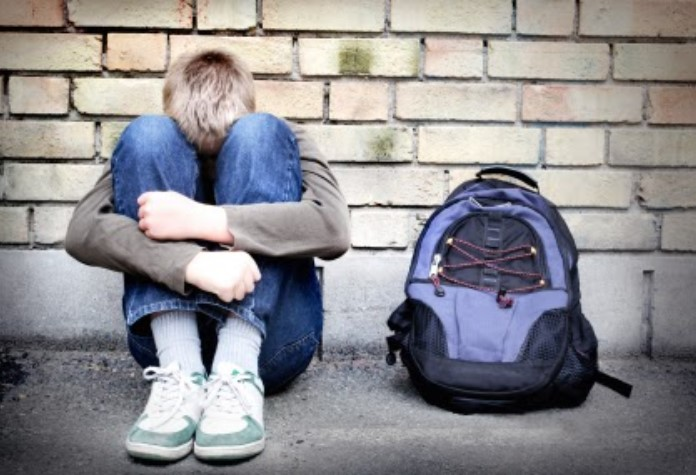

El bullying
¿Cómo prevenir el bullying?
¿Cómo prevenir el acoso escolar?
Los estudios confirman que el bullying es la principal causa de
suicidio entre los adolescentes. Un dato muy preocupante y más aún si tenemos en cuenta que se
registran miles de denuncias al año. Por eso es importante que todas las partes implicadas aprendan
a cómo prevenir el bullying:
¿QUE ES EL BULLYING?
Dan Olweus, psicólogo especializado en violencia escolar, define el bullying como:
- tipo de conducta dirigido a hacer daño
- repetida en el tiempo
- que se produce en el seno de una relación interpersonal caracterizada por un desequilibrio de poder y de fuerzas
- donde la víctima difícilmente puede salir por sus propios medios.
¿Cómo prevenir el bullying?
Es necesario de la cooperación de padres, profesores y alumnos para crear un ambiente seguro
y enriquecedor en el que todo el mundo se sienta bien mientras aprende. Por ello, si eres padre:
- evita comportamientos agresivos y palabras malsonantes en presencia de tu hijo
- foméntale valores como responsabilidad, cooperación, solidaridad, humildad…
- enséñale a controlar sus emociones e impulsos
- ponle límites a su conducta siempre que sea necesario
- conoce a sus amigos y la relación que tiene con ellos
- enseña a tu hijo a pedir disculpas y a reconocer sus errores

¿Como puede prevenirse?
Si eres profesor:
- crea un ambiente sano donde los alumnos se sientan seguros de ser ellos mismos.
- penaliza los malos comportamientos y refuerza los buenos.
- da charlas sobre el bullying.
- promueve que tus alumnos tengan más y mejor autoestima.
- fomenta la cooperación y las actividades en grupo.
- fíjate más en aquellos alumnos más indefensos y habla con ellos personalmente si has visto cosas sospechosas.
- si sospechas de algún caso de bullying contacta con el responsable inmediatamente.
Si eres alumno:
- no juzgues a tus compañeros por su apariencia.
- no emplees nunca la violencia como solución de los problemas.
- comunica inmediatamente al profesor si has presenciado algún caso de bullying.
- no trates a tus compañeros como no te gustaría que te trataran a ti.
- relacionate con los compañeros que veas que están más solos en clase.
- rechaza la violencia y el maltrato como forma de relacionarse con los demás.
Prevenir el bullying está en manos de todos y cada uno de nosotros y si todos aportamos nuestro grano de
arena conseguiremos que este grave problema por fin desaparezca.
IMPORTANTE: Si crees, que tienes un problema, que no puedes resolver por ti mismo/a, no dudes en acudir a
un Psicólogo. Puedes acceder a él a través del Médico de Familia de la Seguridad Social, el cual te derivará al especialista
y te atenderá de forma gratuita.
mas informacion sobre diversos temas: